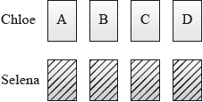

Chloe and Selena play a game where each have four cards showing capital letters A, B, C and D.
Chloe lays her cards face up on the table in order A, B, C, D as shown in the following diagram.

Selena shuffles her cards and lays them face down on the table. She then turns them over one by one to see if her card matches with Chloe’s card directly above.
Chloe wins if no matches occur; otherwise Selena wins.
Chloe and Selena repeat their game so that they play a total of 50 times.
Suppose the discrete random variable X represents the number of times Chloe wins.
Show that the probability that Chloe wins the game is .
Determine the mean of X.
Determine the variance of X.